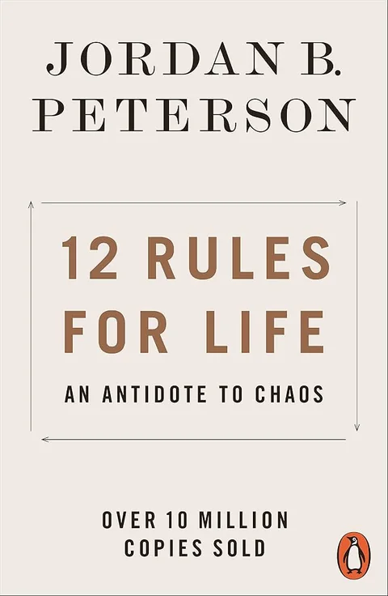
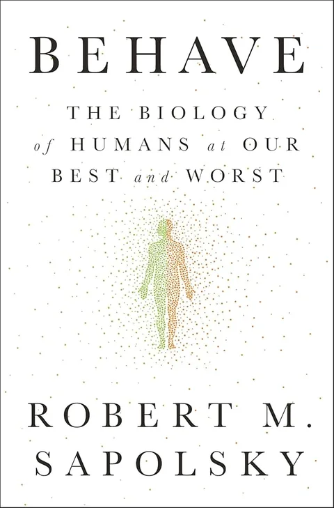
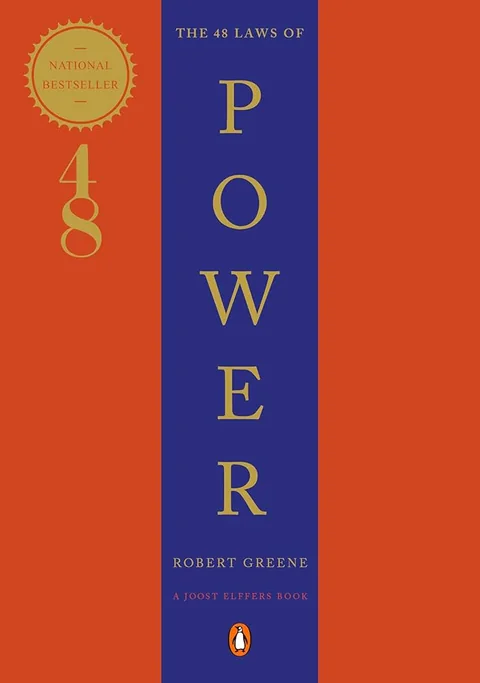

A catalogue
The Library
A partial record of the volumes Mr. Smithers has read in full. His reviews were written over many years in the margins of cocktail napkins, airport lounge receipts and, on one occasion, a parking ticket he was contesting. They have been recovered where possible and transcribed without correction. The collection is small. Mr. Smithers prefers to read things properly.
-

The Holy Bible
The book is, properly speaking, a library, and it should be read as one. Few works attempt to account for the origin of everything in their opening pages, and fewer still do so with such economy. What follows is law, chronicle, poetry and counsel, assembled over a long period by many hands, and the texture changes accordingly. The legal books are exacting; Leviticus in particular feels written out of duty rather than any interest in the reader, and I cannot recommend it as a guide to the table. The psalms restore the earlier force, and the prophetic books have a severity I have come to admire. In the second part the central figure is drawn with remarkable restraint, and the movement from the garden through the trial is as affecting a piece of narrative as I know. I was pleased to see water made into wine, though the vintage was never disclosed, which I still consider an oversight. Revelation is a strange and violent ending, and sits at an odd angle to everything that precedes it. Four stars. I have read it twice, once for the story and once for the structure.
-

The Merriam-Webster Dictionary
It is a compact book, one volume, made for the pocket or the drawer rather than the shelf, and I read it in order, as is my habit. As a dictionary it is clear, current, and unpretentious. The definitions are brief and well judged for ordinary use; the pronunciations are a help; the occasional usage note is sensible. It is an American book, and it does not pretend otherwise. What it cannot offer, and does not try to, is a history of each word. There are no long illustrative quotations, and no sense of a language moving through the centuries. One is simply told what a word means now, which is, for most purposes, enough. I grew attached, again, to entries that appear once and are not mentioned after, and I still use "petrichor" more often than the weather in Milton strictly warrants. I reached the end sooner than I had expected, which I mention as a fact about the book, not as a complaint. Four stars. A practical and well-made volume, and a complete reading of it is a peculiar habit I do not intend to break.
-

12 Rules for Life
The book is a set of twelve rules for conducting a life, drawn from the author's work as a clinician and from a wide, sometimes unruly, reading in mythology, religion and psychology. The rules themselves are plain enough: stand up straight, tell the truth, set your house in order before you set about the world, attend to what is meaningful rather than what is merely convenient. Around each of them he builds a long chapter, mixing case history, family memory and older stories, and the effect is earnest and, at its best, useful. The advice on responsibility and on speech is sound, and I found the chapter on putting one's own affairs in order more bracing than I expected. The book is also longer than its premise requires. Several chapters wander, and the biological analogies, particularly in the opening rule, are asked to carry more weight than they can comfortably bear. I stood up straight for a week and will admit it improved my bearing, if not immediately my character. Four stars. A serious book, unevenly made, and better in its counsel than in its supporting apparatus.
-

The Stand
This is the most ambitious novel I have read, and I do not usually read novels. A plague, imagined with unpleasant plausibility, empties the country; the survivors, drawn together by dreams, divide between two settlements, and what follows is a long account of ordinary people trying to rebuild a world, and of the other sort of people who have no interest in doing so. The early chapters, in which the illness moves from house to house, are the strongest in the book: patient, specific, and difficult to shake. King is good with a large cast. I believed in more of them than I expected to, and I was sorry to leave a few. The middle stretch, the journey west and the founding of the new community, is richer in character than in incident, and some of it could have been firmer. The ending is decisive, but it asks a miracle to do work that the story had, until then, been doing for itself, and I was not entirely persuaded. I began it during a recess in Milton and did not finish it until the sitting was long over. Four stars. I made an exception of my usual habits, and I am glad I did.
-

Behave
Sapolsky's subject is why people do what they do, and his method is to work backwards from the moment of an action: first the nervous system, then the hormones of the preceding hours, then childhood, genes, culture, and finally the long pressure of evolution. It is a clarifying way to organize a vast literature, and he is an unusually good guide to it, exact where he needs to be and willing to say when a finding is less settled than it looks. The book is also very long, and it is honest about complication. By the time one reaches the later chapters, the idea of a single cause, or a simple judgment, has been steadily taken apart, which is the point, and which I found both impressive and, in a courtroom sense, not as immediately useful as I had hoped. I had thought I might cite it. I will not be citing it. The writing, though, is a pleasure: humane, funny in the proper places, and never contemptuous of the reader. Four stars. I have started it once more, from the beginning, at a more reasonable speed.
-

Protocols: An Operating Manual for the Human Body
The premise is that the body can be improved, or at least better maintained, by a set of repeatable practices, and the book lays these out in detail: light, sleep, movement, food, stress, attention. Huberman writes as a scientist addressing a general reader, and the most convincing sections are the ones on circadian light and on sleep, where the advice is clear and the reasoning is easy to follow. Much of the rest is practical and, if followed with some discretion, probably beneficial. The difficulty is the tone of certainty that comes with the word "protocol," which can make a useful habit sound more conclusive than the underlying evidence. The book is also long, and a shorter work might have served the same purpose. I have taken to opening the east window at dawn, which I think has helped, though I still prefer to do it with a glass of something red, which is not, I have gathered, in the manual. Four stars. A serious and usable book, provided one is willing to adapt the instructions.
-

The 48 Laws of Power
Greene offers forty-eight rules for the getting and keeping of power, each illustrated with historical cases drawn from courts, campaigns and households of a more openly treacherous kind than our own. The structure is clear and the reading is easy; he has a talent for the memorable example, and several of the laws name something one recognizes at once from ordinary professional life. As a guide, however, the book is less sure. The laws do not always agree with one another, and the historical material is used to illustrate a point rather than to test it. More awkwardly, the work treats almost every human relation as a contest, which is a poor account of most of the rooms I have spent my life in, and a dangerous one if taken too much to heart. I did try Law 4, on saying less than necessary, during a sentencing in Milton. The results were mixed, and I have since resumed my remarks. Three stars. It is useful as a catalogue of maneuvers I would rather be able to recognize than to practice.
Further reviews are being recovered. The estate thanks you for your patience.